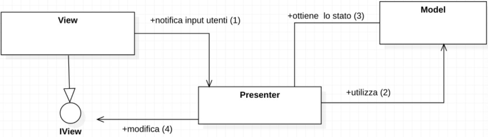
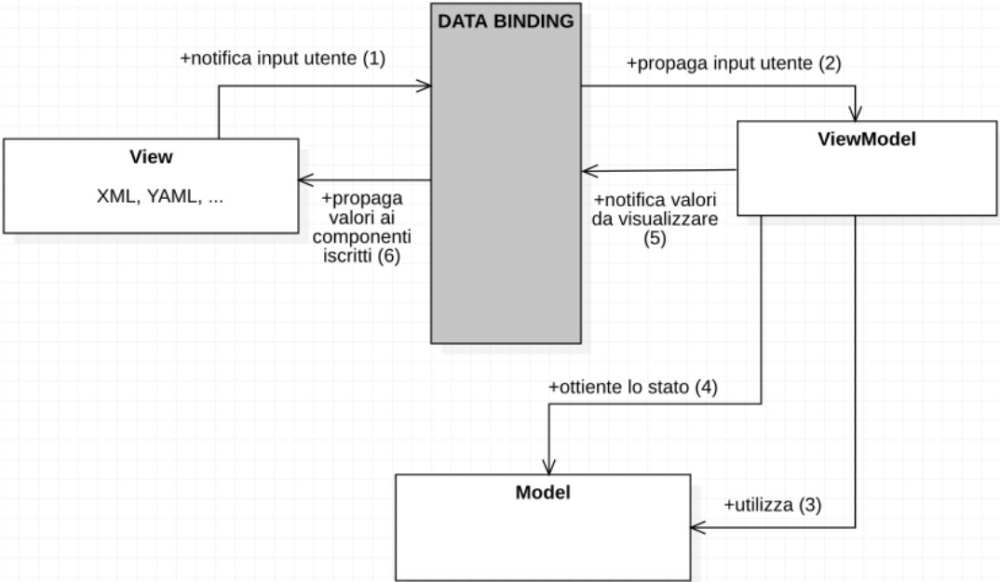

Il paradigma Model-View-Controller tradizionale può presentare alcuni problemi. Ad esempio, la View può essere dipendente dal Modello o il Controller dalla View. In questi casi, il testing diventa assai complesso e il Controller spesso finisce per contenere troppa logica.
Vengono così introdotte delle alternative al classico MVC che elencheremo di seguito.
Il pattern MVP è simile a quello MVC, ma la View non ha dipendenze dal Modello. La comunicazione Controller-View avviene attraverso delle interfacce.
In questo caso, i componenti si dividono così:

Questo paradigma riduce ulteriormente le dipendenze tra livelli ed è strutturato come segue:
Observable)Un insieme di componenti dedicati hanno la funzione di collegare View e ViewModel nel processo di Data Binding. Solitamente, questo livello è fornito da un framework, come ad esempio Android. L’utente, nella definizione della View, può iscriversi ad uno specifico ViewModel ed ai relativi dati.
